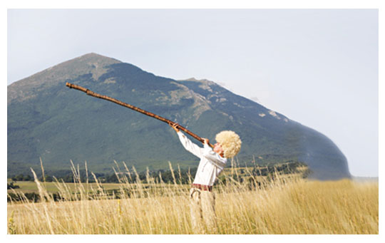
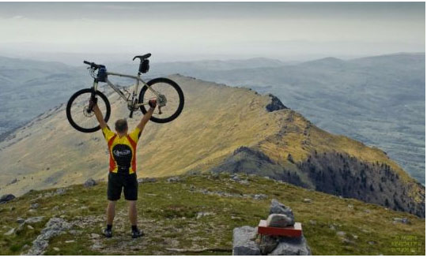

Podjednako atraktivan i leti i zimi, Rtanj je iz godine u godinu sve popularniji. Njegova osnovna ponuda – nezagađena priroda povlači i sve ostale privlačnosti za turiste i avanturiste, lovce i ribolovce, planinare, bicikliste, skijaše, paraglajderiste. U zagrljaju kamena, vode, listopadnih i četinarskih šuma našlo se obilje lekovitog bilja i raznovrsne divljači od koje su lovcima najprivlačniji vukovi, srne i divlje svinje, a u podnožju samuju ugašeni manastiri Krepičevac, Lapušnja i Lozica. Zbog svega toga Rtanj je još od sredine prošlog veka pod okriljem Zavoda za zaštitu prirode.
Oko Rtnja su se vazda ispredale priče i legende, pripovedači i pesnici imali su tu mnogo posla. Mnogi meštani se mršte na priču nekog dovitljivog kafedžije da je u utrobi planine heliodrom na koji sleću vanzemaljci, ali rado prepričavaju druge dve legende. Prema jednoj se u ogromnoj rtanjskoj šupljini nalazilo čarobno jezero usred koga je bio zamak bogatog vlastelina koji je imao prelepu ženu zlatne kose. Zatočena od ljubomornog muža, ona je uspela da pobegne tako što se pretvorila u ribu sa zlatastim pegicama koje inače krase pastrmke. Druga legenda kaže da je tu bio dvor nekog čarobnjaka prepun zlata koji je izgoreo u velikom požaru. Zlato se topilo i slivalo niz zidine stvarajući piramidu i onaj ponosni svevideći vrh oko koga se igraju oblaci. Žrtva ove druge legende je kapela na vrhu Rtnja koju su devedesetih godina prošlog veka dinamitom razrušili neumorni tragači za zlatom, tako da je od nje danas ostao samo zidić.
Rikalo je stari duvački, čobanski instrument, spada u trube, izrađuje se ili od kore drveta ili dubljenog drveta. Prvo je sezonsko, drugo trajno. Ima specifičan zvuk koji podseća na fanfar, pa se često koristi za otvaranje festivala. Etno-muzikolozi su zabeležili da je zastupljen u ovom kraju.

Seoski turizam je počeo da se razvija u sledećim podrtanjskim selima:
Vrmodža je planinsko selo koje se nalazi 3 km od Soko banje iz pravca Aleksinca preko mosta na reci Moravic i i odmah posle sela Trgovište, u samom podnožju planine Rtanj ima tridesetak registrovanih ležaja za seoski turizam, prodavnica i kafana i nalazi se na 500 m.n.v ima oko 200domaćinstava i 700 stanovnika. Ovo selo takođe nudi i brojne druge aktivnosti kao što su: boravak u prirodi, ima pet vrlo atraktivnih izletišta, terene za košarku, mali fudbal i paraglajding,zatim se nudi branje pečuraka i lekovitog bilja, kao i pomaganje domacinima u poslu: skupljanje sena, branje kukuruza, voća i grožđa.
Selo Mužinac se malazi na 15 km od Soko banje, zbijenog je tipa i ima oblik grozda. Gotovo sve kuće u ovom selu su poređane dužinom puta, koji preko ovog sela vodi za susedno selo Šarbanovac. Smeštajni kapaciteti su u lepo opremljenim domaćinskim kućama. Hrana spremana starim srpskim običajima se priprema svakoga dana.
Put dalje vodi do sela Šarbanovac, još jednog u nizu podrtanjskih sela u kome još uvek živi i funkcioniše jedna od retkih vodenica napravljena pre 65 godina.
Vrste turizma razvijene na Rtnju, kao i potencijali za dalji razvoj planine su: eko turizam, lovni (na visoku divljač), ribolovni turizam, planinski turizam, kamp turizam, izletnički, ekskurzioni, manifestacioni turizam, sport i rekreacija, posmatranje ptica, zimski, life participating i NLO turizam.
